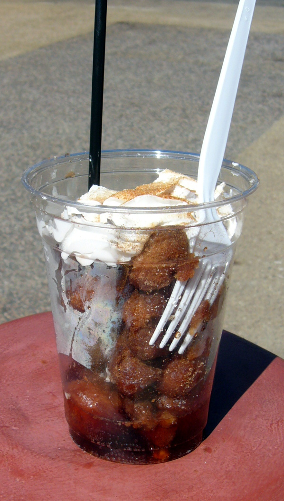

Fried Coke

Description
Fried coke is a scrumptious and heartstopping delicacy hailing from Texas.
Its creator, Abel Gonzales Jr., introduced the dish at the 2006 State Fair of Texas.
Since its inception, fried coke has appeared in various different locations with different toppings and soda.
Ingredients
- 3 eggs
- 2 cups Coca-Cola
- 1/4 cup granulated sugar
- 3 to 4 cups all-purpose flour
- 2 teaspoons baking powder
- 1/2 teaspoon salt
- vegetable oil for deep frying
- powdered sugar
- Pure cola syrup
- whipped cream
- maraschino cherries
Steps
- In a large bowl, beat the eggs, then add the Coca-Cola and granulated sugar.
- Sift 2 cups of the flour, the baking powder, and salt and add to the Coca-Cola mixture.
Mix while adding more flour, until the batter is smooth and not too thick.
- Heat the oil to 375 degrees farenheit in a deep fryer.
- Drop 1 1/2-inch dough balls into the fryer and cook for 2 to 3 minutes, until golden.
Remove them with a slotted spoon to paper towels to drain.
- Sprinkle the fried Coke balls with powdered sugar
while they are still hot, and douse with cola syrup.
- Garnish with whipped cream and maraschino cherries, if desired, and serve.